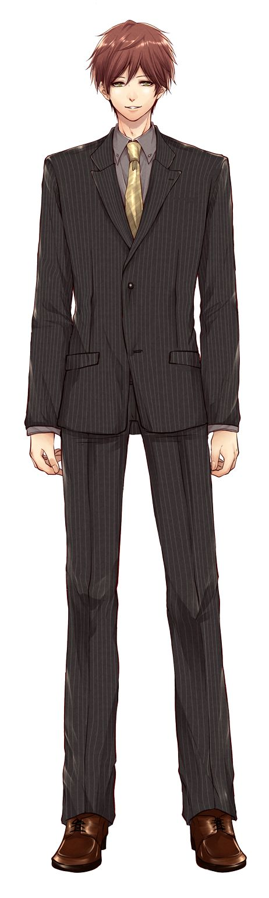
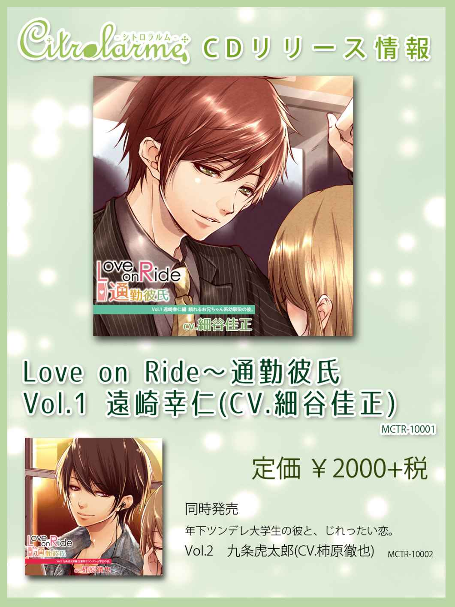
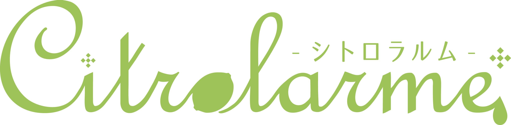

| 『Love on Ride ～ 通勤彼氏 Vol.1 遠崎幸仁』（CV：細谷佳正）シナリオブック Love on Ride～通勤彼氏 (Citrolarme) | |
| カミクラ | |
※このシナリオブックは、シチュエーションCD『Love on Ride ～ 通勤彼氏 Vol.1 遠崎幸仁』（CV:細谷佳正）の脚本をそのまま電子書籍にしたものです。
※音声は入っておりませんので、ご了承下さい。
シチュエーションCD シナリオブック
『Love on Ride ～ 通勤彼氏 Ｖｏｌ．１ 遠崎幸仁』
カミクラ
＊ 目次 ＊
１．タイトルコール
２．再会した朝
３．もう一度近づく距離。 （※ダミーヘッドマイク使用）
４．電車内
５．密着する満員電車 （※ダミーヘッドマイク使用）
６．遅れる電車、縮まる距離
７．夜道
８．運命のいたずら
９．家
10 ．二人の想い （※ダミーヘッドマイク使用）
■キャラクター設定
遠崎 幸仁
ＣＶ：細谷佳正
年齢 28 歳
身長 １８５センチ
スポーツマン系爽やか青年
面倒見の良いお兄ちゃんタイプ
優しく穏やかな印象だが、内に秘める思いは熱い。

１．タイトルコール
「通勤彼氏 遠崎幸仁編 細谷佳正」
「君はロマンチストって笑うかもしれないけど、俺は運命を信じてる。何年経っても、君が好きだ。ずっと君だけを見てた。君じゃなきゃダメなんだ。俺の心は、ずっと君でいっぱいなんだよ」
２．再会した朝
【SE 】鳥の鳴き声。スーツを着る衣擦れの音
「よし、準備完了。いつもより早起きした朝は気持ちがいいな。うん」
【SE 】歩き出す足音、フェードアウト。
「いつもよりちょっとだけ、駅も空いてるような気がするな...」
【SE 】電車の到着する音。ドアが開き、まばらな足音。
少し遅れて、速足でかけてくるヒールの音、ドアが閉まる。電車の揺れる音。
ヒロインが隣に立つ。見覚えのある顔だが記憶と少し違うため、若干の間をおいて
「あれ？ もしかして...」
『え？』
「やっぱりそうだ、久しぶり。俺のこと、覚えてる？」
『えっと...』
「ああごめん、いきなり声なんかかけて。びっくりしたよね。やっぱ覚えてないかな？ まあ思い出せないのも無理ないよ。俺が大学を卒業して直ぐ家を出たから...６年ぶりくらいだし。（少し間を空け）でも、俺は君の事を覚えているのに、君に俺を思い出してもらえないのはちょっとだけさみしいな。ほら、この顔。見覚え無いかな？ 君の家の近所に住んでたスポーツ馬鹿。よく君と部活帰りに...（途中で彼女が思い出して遮られる）」
『あ、遠崎さん？』
「そう、遠崎！ 思い出してくれてうれしいよ、ありがとう。思い出してもらえなかったらどうしようかと思った。ただの危ない人って思われて通報されたらヤバイし。うん、ほんと、よかったよ」
間
「今から出勤？」
『うん』
「そうなんだ！ 俺も今から出勤。いつもはもう少し遅い電車に乗ってるんだけどね、今日はたまたま早くに目が覚めたから、それで」
『そうなんだ』
「それにしても、驚いた。こんな所で君に会うなんて。もしかして、いつもあの駅利用してるの？」
『うん』
「本当？ 凄い偶然だね。こんなに近くに地元のおさななじみが住んでるなんて思いもしなかったよ。（ヒロインに微笑みながら）君にこうやって会えるんなら、明日から毎日早起きしようかな」
『え？』
「なんでもない、冗談だよ」
『遠崎さんも冗談言えるんだ』
「なっ...（心なしか拗ねたように）俺だって、冗談の一つくらい言えます。確かに、昔は部活ばかりに打ち込んでたせいもあって、すっごい硬かったけどね。まったく...君の中での俺の印象っていったいどうなってるの？」
『馬鹿真面目なお兄ちゃん』
「馬鹿真面目なおにいちゃん...それって褒めてるの？ あんまり褒められてる気がしないよ...」
『ほめてるよ』
「はい、じゃあ褒められてるって思うことにします」
間
「そうだ、君、どこの駅まで？」
『○○』
「じゃあ俺と一緒だね、俺はそこで乗換なんだ」
【SE 】ドアの開く音、大勢の人が乗り込んでくる。
「うわ、すごい人だね。押し込まれるよ。この時間もやっぱり混むな...」
【SE 】電車の音、フェードアウト。
「ふう、大丈夫？ 朝はこれだけで疲れちゃうよね」
『うん』
「君は、あっちか。じゃあここでお別れだね、残念。これが出勤前とかじゃなければ、もっと話していたかったんだけど...（少し考えてから）あ、そうだ！」
幸仁、携帯を取り出す
「はい、これ、俺のアドレス。再会の記念ってことで。よかったらメールして。待ってるよ。じゃあ...またね。仕事、頑張って」
【SE 】離れていくヒールの音、駅の雑踏
「明日も、ちょっと頑張って早起きしようかな」
３．もう一度近づく距離。
【SE 】駅構内、改札を通過する音。まばらな雑踏。革靴の足音
「（背後から囁くように）おはよ」
『（びっくり）もう少し遅い時間じゃなかったの？』
「え？ ああ、今日もたまたま早く...（ヒロインの反応を見つつ）なんてね、君に会いたいからわざわざ早く来たんだ」
『冗談？』
「冗談じゃない、本当だって。（囁くように）君とまた出会えたんだ、神様がくれたせっかくのチャンス、逃すわけにはいかないだろ？」
『えっ？』
「あっ、ちょっと引いた？ 臭いセリフだったかなぁ？ えっ、びっくりしただけ？ 別に驚かせるつもりじゃなかったんだ。でも、君、さっきもスマホに夢中で俺が後ろから来たのに全然気付かなかったよね。そんなに隙だらけだと、危ないよ？ なにしてたの？」
『アプリ』
「ああ、そのアプリ流行ってるよね。同僚もハマってるって言ってた。周りの奴ら、みんなやってるんだよなぁ。俺？（苦笑しながら）あんまりよく分からないんだよね。ＳＮＳとかもよく分からないし、タグとかつぶやきとかって何？ 正直、メールがやっとだよ。昨日の返信の遅さ、みたでしょ？」
『確かに遅かった』
「まだスマホも使い慣れなくてさ。文字を打つのが難しくて。それにちょっと緊張しちゃって、いつもの何倍も時間がかかっちゃったよ」
『緊張？』
「そう。君と何を話していいか分からなくてさ。ずっと体育会系の男どもの中で過ごしてたし、職場の同僚もほとんど男だから、女の子が喜ぶ会話とかあんまりよく分からないんだよ」
『気にしなくていいのに』
「気にするよ、だって君にメールをするんだ。少しでも良く思われたいじゃないか」
『からかわないでよ』
「はは、からかってないって。照れると真っ赤になるところ、今も変わってないんだね、かわいい」
『子供扱いはやめて』
「（若干驚きつつ）子供扱いなんて、してるつもりはないんだけどな。確かに小さい頃の君は、俺のかわいい妹！ って感じだったけどね。そうそう、昔みたいに『幸仁お兄ちゃん』って呼んでもいいんだよ？（笑いながら）」
『呼びません』
「（含み笑いしながら）ごめんごめん、本気で言ってるわけじゃないよ。大体、そんな風に呼ばれてたのって...何年前だっけ？ 十年以上前のことだよね、多分。それに、もう俺もお兄ちゃんっていう年じゃなくなってきたし、君もフォーマルな服装の似合う立派な大人の女性になったしね。あの頃からは想像できないほど綺麗になったよ」
『遠崎さんはチャラくなった』
「えぇ、俺がチャラくなったって...（苦笑しながら）確かに少しは変わったとは思うけどね。ほんのちょっとだけ、自分に素直になったかな。昔は我慢するばかりだったけど、それじゃあ何も変わらないってわかったから。まぁ、その結果、いま君に『チャラい』って言われちゃったんだけど」
『ごめん』
「（微笑みつつ）謝らないでいいよ、別に俺は気にしてないし。昔がものすごく硬かった分、君にそう思われても仕方ないしね。あのころは体育会系だったし。」
『陸上部だっけ』
「そう、中学高校大学、ずっと陸上一筋。今でも、ほとんど毎晩走ってるんだ。もしかしたら、気付いてないだけで君の家の近くを走っていたかもしれないね。結構遠くまでぐるぐる回ってたりするから」
『すごい』
「いや、凄くはないさ。走るのが好きってのもあるけど、結局は長年の習慣が染み付いて抜けないだけだからね（少し楽しそうに）あ、でも、だから今でも体力に自信はあるよ。君くらいなら、お姫様抱っこして走っても平気だろうね」
『え？』
「（近づいて）やってみる？」
『やらない！』
「あはは、冗談だよ！」
【SE 】電車の到着する音。まばらな足音とドアの開閉音。
【SE 】ややあって電車の発車音
４．電車内
【SE 】電車の揺れる音
「なんだか、すごく不思議な気分だな」
『え？』
「君と一緒にこうやって同じ電車に乗って出勤するなんて、思ってもみなかったよ。何というか、感慨深いものがある」
『そうだね、今なんの仕事してるの？』
「え？ 俺の仕事？ スポーツ用品メーカーの営業。いろいろ悩んだんだけど、やっぱり何かしらでスポーツに関わっていたくてこの会社に就職を決めたんだ。営業って、全く未知の世界だったから最初はすごく大変でさ。新人の頃は、上司や取引先に怒られるなんてしょっちゅうだったよ。でも今は、やりがいのある良い仕事だなって思ってる。決して楽ってわけじゃないけどね（彼女を見て）君はなんの仕事してるの？」
『○○』
「へぇ、そうなんだ。どう？ 仕事楽しい？（彼女の反応をうかがう）」
『楽しいけど、新人だから怒られることもあって』
「そっか......まぁ、人間だれしもミスすることってあるって。俺だって、まだうまくできないことだって沢山あるし...対人間の職場だから、難しいことも山ほど...（愚痴を言いかけはっとして）っと...とにかく、そんなに自分を卑下しなくていいんじゃないかな。ミスしたから駄目だ、じゃなくてそれをばねにして成長してやる、あの上司いつかぶっとばして...ああ、これはちょっと違うか。でも、それくらいの心意気で、前向きに行こうよ（明るく笑いながら）」
『そうだね』
「うん。少し表情が明るくなった。その顔、すごく良い。素敵だよ」
『気にしてくれてたの？』
「気にしてくれてたの？ って、当たり前じゃないか！ 君の浮かない顔なんて見たくない。君が笑顔になるなら俺は何でもするよ。俺にできることなんて、限られてるけど...（優しく）無理はしちゃだめだよ。俺でよければ、いつでも相談に乗るから、ね（無意識に撫でている。はっとして少し恥ずかしそうに）あっ、ごめん、いきなり撫でたりして...つい...」
『ありがとう』
「え？（驚き、ちょっと間抜けな声）あ、ああ、びっくりした...撫でたことにお礼を言われたのかと思ったよ...。お礼なんて言わなくていいのに、まだ何もしてないんだから」
『それでも、ありがとう』
ヒロインにじっと見つめられてお礼を言われる。
「（こそばゆそうに）...なんか、見つめられながら、ありがとうって言ってもらうのって、照れるな。うん」
『あはは』
「笑うなって！ こういうのに免疫が無いのはしょうがないんだよ！ それに、他の人から普通に言われるのと、君に見つめられながら言われるのとじゃあ訳がちがう」
『なんで？』
「なんでって...（少し困惑したように）ほら、こうやって見つめて...（ゆっくり甘めに）微笑みながら、『ありがとう』って言われたら、なんだかちょっと照れない？」
『...うん』
「だろ？ なんかこう、くすぐったい感じがする。嬉しいんだけど、このむずがゆい気持ちをどこに持っていっていいか分からなくなるよね。こういう時、素直にその気持ちを表現できる人間を俺は尊敬するよ（茶化すように笑いながら言っていたが、ぼそりと）...俺にはまだちょっと難しいかな...」
【SE 】ドアが開く音。人がたくさん入ってくる。
「...うわっ」
５．密着する満員電車 ※ダミーヘッドマイク使用
人に押されて、幸仁がヒロインを壁ドンするような形になり身動きが取れない。以降、声は斜め上から囁く感じ。
「っ、大丈夫？ 俺とドアの間で君が潰されたら大変だからね。ちょっときついけど。」
『大丈夫』
「（彼女がもぞもぞするのを見て）なに？ あ、もしかして汗臭い？」
『ちがう』
「そう、よかった。実は今朝、ちょっと走ったんだよね...君に会うために。なかなか生活リズムって変わらないでしょ？ いつもより早起きしたにはしたんだけど、結構ぎりぎりでさ。こういう時、自分が陸上やってて良かったって思うよ。スーツはすこし走りにくかったけどね（少し間を開け、囁くように）君、すごく良い匂いがする。香水つけてる？」
『香水はしてない』
「香水じゃないんだ。（少し考えて独り言のように）じゃあ、シャンプーとか...（彼女の顔を見て）あっ、今もしかしてちょっと変態っぽいなって思った？」
『うん』
「そうはっきり肯定されると、さすがの俺も少なからずショックです...はは（苦笑しながら）でも完全に否定ができない所が男のさがというか...なんというか...」
やや間を置いて息を吐き、耳元で囁くように
「正直に言うと、俺は今、ラッキーって思ってる。満員電車じゃなかったら君との距離がこんなに近くなったりしないし...」
困惑する彼女に微笑む
「君をこんなふうに見つめられるチャンス、そうないからね。睫毛 ながいなーとか、唇ぷるぷるだなーとか、変態っぽいって言われても仕方ないだろうけど、実は今すっごくドキドキしてるんだ。ねぇ、君は？ 少しでもドキドキしたりしてる...？」
【SE 】ガタン、と電車の揺れる音
「おっと...（彼女との距離がさらに近づき密着する）ごめん、降りる駅までそんなに長くないから、少し我慢して」
【SE 】抱きしめる、衣擦れの音
「...なんだ。君も結構ドキドキしてるんだね、気まぐれな神様はどうも俺に味方しているみたいだ。こうして君の鼓動を直に感じながら、君を見つめていられるなんて。神様に感謝だな。それにしても意識したことなかったけど、君ってこんなに小っちゃかったんだね。これじゃあ、毎日大変だったんじゃない？」
『べつに（軽くたたく）』
「いた。バカにしてるわけじゃないんだよ、怒らないでってば。ただ、君を抱きしめたのなんて、それこそ本当にお互い子どもの頃の話だったからさ。（懐かしむように）君だって成長しただろうけど、俺自身、高校生くらいの時に凄く身長が伸びたから、君とこんなに体格差があるって思ってなかったんだ（抱きしめながら）...それにしても...細いな、力を入れたら簡単に折れちゃいそうだ。ちゃんと食べてる？」
『...食べてる』
「心配だな。君はすぐ無茶をしようとするから...仕事が忙しくて昼とか夜とか抜いてる、とかしてないよね？」
『...本当』
「あ、今少し目線そらしたよね？ もう、身体を壊したら元も子も無いんだよ。いそがしいのは分かるけど、ご飯はちゃんと食べないとダメ。（すこし悪戯っぽく）...あ、なんなら俺が作りに行ってあげようか？ 結構料理には自信があるよ。得意料理は煮物です」
『ほんとに？』
「（思わぬ反応に驚く）えっ、君、俺にご飯作ってほしいの？ そんな素直に喜ばれると思わなかったから、ちょっとびっくりしたよ。いや...うん、君が良いっていうなら作りに行くのは全然やぶさかじゃないというか、君の家に行ける絶好の機会というか...（一人でぼそぼそ）」
『遠崎さん？』
「あっ、いや、なんでも。（咳払いして取り直す）じゃあ、今度俺の得意料理をごちそうするよ。その代わり、君もいつか俺にご飯を作ってくれないかな」
『うまくないよ？』
「料理のうまい、へた、は問題じゃないよ。俺は君に作ってほしいんだ。好き嫌いも無いし、なんでも食べるよ。（少し悩んでから）...人が食べられるものなら、なんでも」
『そんなへたじゃない』
「君の料理が下手そうだなって思って言ってるわけじゃないんだって、一応言っただけ（腕をつねられ）あ、いたい！ ごめんごめん、拗ねないで」
『拗ねてない』
「（優しく囁く）俺が悪かったよ、ごめんね」
【SE 】衣擦れの音
「（そわそわしつつ息を吐く）はぁ...早く、駅についてほしいような、着いてほしくないような...」
『なんで？』
「君をいつまでも抱きしめていたいけど、これ以上君を抱きしめていたら、俺の心臓が持たない気がしてきた。朝からこれで、今日一日ちゃんと働けるかが心配だよ。（耳元で囁く）君のことしか考えられないような気がする...君の匂い、君の鼓動、君の細くて温かい体、今までで一番ドキドキした時間...（離れて）なんてね。でも、すこしでもいいから、君も同じように俺のことを考えていてくれたら嬉しいな」
【SE 】ドアの開く音。人の足音が、ぞろぞろと下りてく
「ふぅ...（彼女を気にしつつ）大丈夫？ 苦しかったよね？ あ、髪の毛、ちょっとぐしゃぐしゃになってるよ。...ちょっとおいで（彼女を引き寄せ）...はい、直った」
『遠崎さんもネクタイ』
「え？ ネクタイ？（彼女に直されて照れる）っ...な、なんかこういうのって、その、恋人っていうか、お嫁さんというか...（消え入りそうな感じで）...恥ずかしいな、なんか。仕方なかったとはいえ、さっきまで君のこと抱きしめてたのに、君から何かしてもらう方がずっと照れくさい」
『へんなの』
「笑わないでよ、俺だってちょっと変だと思ってるんだから（少し拗ねたように。それから時計を気にして）...ああ、こういう時乗り継ぎの時間が恨めしい...もうちょっと君といたいけど、仕方ないね」
気持ちを切り替えるように一息
「じゃあ、今日も仕事がんばって。無理はしないでね、それから、お昼はちゃんと食べるんだよ？（彼女に笑われる）お母さんみたいって...、はぁ、いいけどね、いまはそれでも（仕切りなおすように一呼吸）それじゃあ...（軽く笑って、明るく）いってらっしゃい！」
６．遅れる電車、縮まる距離
■夕方 駅 人混み
【SE 】駅構内のがやがやした音。
「...あれ、おーい。こっちこっち！（少し離れた所から、徐々に近づいてくる）びっくりした。今から帰り？」
『うん』
「俺も。それにしても...ポイント故障で電車が止まった、なんてついてないね。駅は帰宅ラッシュのサラリーマンでごったがえしてるし、電車が動き始めても車両が混みすぎてなかなか乗れないし。（彼女の様子を伺いすこし悪戯っぽく）まぁ、俺としては、電車が止まったおかげでいつもは会えないはずの君とここで会えたからちょっとラッキー、とか思ってるけどね。 （苦笑しながら）君の会社の最寄駅はここだけど、俺はここで乗り継いで別路線だから、時間が合わないのは当たり前なんだけど」
『そうだね』
「（彼女をのぞき込むように）君、ちょっと疲れてる？ 今日も仕事大変だったのかな？（彼女の話を聞くように少し間を空け）...うん、そっか。そういう日もあるよね。お疲れ、よく頑張りました。（優しく）俺も今日ちょっと大変でさ、早く休日にならないかなーって思いながら仕事してたよ」
『休日何してるの？』
「俺の休日の過ごし方？ うーん、掃除、洗濯、買い物...たまに映画とか観に行ったりすることもあるけど、趣味という趣味もないし、何の変哲もない休日を過ごしてるかな。あ、でも最近同僚にフットサルに誘われて、ちょくちょく参加してるんだ。やっぱり、体を動かすのっていいよね（楽しそうに言ってから、彼女を伺い）君は休日、なにしてるの？」
『色々』
「色々って...（少し考え）そうだ、ねぇ、今度君が暇な時で構わないからさ、一緒に出掛けない？ その君の『色々』に俺も付き合わせてよ。君の好きなものとか、好きな場所とか、今の君の事をもっと知りたいんだ。それに、君の私服が見たいってのもあってさ。ほら、基本的にスーツでしか会わないだろ？ だから、君が普段どんな服を着てるのかすごく気になる」
『それってデート？』
「うん、そう。デートのお誘いだよ」
言い切ってから、赤面する彼女を見てだんだん恥ずかしくなり
「...あー、やっぱデートっていうほどじゃ...いや、デートの方が俺もうれしいし、デートであって欲しいんだけど...、君がそんなに赤くなるとは思ってなかったから、なんだかすごい恥ずかしくなってきた。てっきり、いつもみたいに、からかうなって言われるもんだと...（耳元でささやく）もしかして俺のこと、意識しちゃった？」
彼女が後ずさる
「ふふ、かわいい。（彼女を見て）睨まないでよ、からかってるわけじゃないんだってば。それで、デートのお誘いはＯＫなのかな？」
『来週末なら』
「分かった、来週末。約束だよ。何をしようか、考えるだけでも楽しくなってくるね。ねぇ、君はどこか行きたいところはある？」
『どこでもいいよ』
「ええ、どこでもいいって...。うーん（困ったように考え）あ、そうだ。じゃああのテーマパークはどう？ 最近新しいアトラクションが増えたらしいし、ちょうど期間限定のイベントが開催してるんだ。結構パレードも盛り上がってるんだよ。君がこういうのが嫌いじゃなければ...」
『うん、そこがいい』
「本当？ よかった。じゃあ、今度のデートはそのテーマパークにしよう。ああ、今から楽しみだよ。君と二人で出掛けるなんて、何年振りかも分からないし...あの新アトラクション、結構気になってたんだよな（少しはしゃぎつつ）」
『遠崎さんこどもみたい』
「（すこしむっとして）子供みたい、じゃなくてせめて童心を忘れてないって言ってよ。テーマパークも楽しみではあるけど...俺は君とのデートの約束だから、楽しみで仕方ないんだよ。俺と君で、二人だけの同じ時間を共有するって、すごく特別なことのような気がしない？」
【SE 】電車の到着する音。
「あっ、ちょっと空いてきて乗れそうだし、あの電車に乗ろう。（ちょっと悪戯っぽく）埋もれちゃいそうなら、この前みたいに抱きしめてあげようか」
『いい！』
「冗談だよ（笑いながら）」
【SE 】ドアの閉じる音。電車の動き出す音。フェードアウト
【SE 】ドアの開く音。まばらな足音
「やっと着いた...徐行運転のせいでいつもより時間かかったね。君を押しつぶしそうでひやひやしたよ（間を空けて）しっかし...同じ駅を使ってるのに、君は反対の出口だなんて、残念だなぁ。俺は夕食の食材を買ってから帰るから、ここでお別れだね。気を付けて帰るんだよ、それから、めんどくさくてもちゃんとご飯は食べること。...うん、じゃあ...（優しく）今日も一日お疲れ様。また明日...おやすみ」
７．夜道
夜。二人の最寄り駅。携帯を確認しつつ改札で待つ幸仁。
「（一人でぼそぼそ）あの駅を出たって言ってたのがさっきだから、もうすぐ着くかな。『のみかいあってきたー』なんて漢字に変換もされてない上に、文字の打ち間違えをしてるメール送ってくるなんて、絶対に酔ってるに違いない（改札を出る彼女を見つけ）...あ、こっちだよ」
『本当に迎えに来なくてもいいのに』
「あんなメールされて、心配するなって方が無理だ。迎えに来るくらい別に何ともないし、ちょうどランニングしてたしね。ちょっとした寄り道くらいだよ」
『うふふ、ありがとう』
「どういたしまして。（彼女の様子を見て）でも君やっぱりすごい酔ってるよね？ これは迎えに来て正解だった気がする」
『酔ってない』
「はぁ...酔っ払いほど、酔ってないっていうんだよ。まあいいや（手を差し出す）はい」
『？』
「手つなぐよ。君、足元ふらふらじゃないか。支えてないと、すぐ転びそうだから」
『こどもあつかい』
「（少し呆れたように）子供扱いじゃないって。そんな言うんならお姫様抱っこで連れて行ってあげようか、（耳元でささやく感じで）俺の大事なお姫様」
『（叩きながら）からかわないでよ』
「いててっ。からかってないって。もういいから、ほら。家はどっち？（彼女が場所を答える）ああ、あの辺りなんだ」
幸仁が手を取り、歩き出す。
「やっぱり、あの辺りならいつも走ってるな、多分。俺の家は交番の...（彼女に場所を言われ）そうそう、その辺りなんだけどね、たまにあっち側までぐるぐる回ったりしてるからさ。そんなに長くないよ、学生時代に走ってた距離に比べたら全然。それでもたまに、きっついなーって思っちゃってさ。歳かな？（茶化すように笑う）」
【SE 】二人の足音。しばらくの沈黙
「大丈夫？ もっとゆっくり歩く？」
『大丈夫』
「それにしても、何でこんなになるまで飲んだの。君、どう見てもお酒強そうには見えないんだけど」
『弱くない』
「お酒が弱くない人間がこんなフラフラになるまで飲んでたら、それこそ問題だよ。あんなメールがいきなり来て、びっくりしたんだからな」
『怒ってる？』
「怒ってるんじゃないよ。まぁちょっと怒りたい気持ちも無いとはいえないけど...（優しくささやくように）とにかく、凄く心配した。まずこの駅までちゃんと帰ってこれるかって所から不安だったよ。居眠りして終点まで行っちゃった...とか言われたらどうしようかと思ったし。それに君、この夜道を一人で帰るつもりだったんでしょ？ 街灯があるとはいえ、危ないよ。何かあったらどうすんの」
『ごめん』
「いいよ、乗り過ごしたりしないでちゃんとこの駅で降りられたし、俺も迎えに来れたしね。何でこんなに飲んだのかは知らないけど...君のことだから、無理に飲まされたとかじゃなくて、なにかいいことでもあって飲みすぎちゃったのかなって思ってるんだけど」
『先輩が、寿退社するの』
「へぇ、先輩が寿退社か。じゃあ今日は、その先輩のお祝いをみんなでしてきたってことかな？ なるほど、それで飲みすぎちゃったんだね」
『そう、お世話になってて』
「そっか、お世話になった先輩だったなら、なおさら嬉しいよね。君らしい（笑いながら楽しそうに）あ、君泣いたでしょ、それも結構豪快に。その先輩に泣きつく勢いだったとみた。メイクが落ちて目の周りがパンダみたいになってるよ」
慌てる彼女を見てさらに楽しそうに
「あはは、大丈夫。確かに少し落ちてるけど、ちょっと大げさに言ってみただけだよ。いつも通り、かわいい。あ、先に言っておくけどからかってるわけでも、子供扱いしているわけでもないからね。正真正銘、俺の本音だよ」
照れる彼女に微笑む
「そういえば俺の同期や同級生も、何人かもう結婚してる奴がいるよ。この前も結婚式に行ってきたし...あんな男ばかりの環境で、どうやって出会いを見つけているのやら。ああ、合コンとかかな、そういえばよくやってる奴がいた（苦笑しつつ）」
『遠崎さん合コンいくの？』
「俺？ 合コンはいかないよ、まあ、どうしても付き合いで行かなきゃいけないって時は仕方なく参加するけど、それでもやっぱり気乗りはしないな。あんまりああいうの得意じゃなくて。ただ頭数として酒を飲みに行ってるって感じかな」
『遠崎さん、モテそう』
「いや、モテないよ、あんまり喋るの得意じゃないし。前も言ったけど何を話題にしていいか分からないんだ。だから合コン中は本当にいるだけ。俺の仕事はそれが終わった後かな。酒がわりと強い方だから、酔いつぶれた同僚を背負って帰ったり、女の子をタクシーで帰らせたり、色々（笑いながら）だから...君が気になるかは分からないけど、もちろん恋人もいません。学生時代は部活に、今は仕事に忙しくて出会いを求めたりもしてないし。それに、昔からずっと想ってる人がいるからさ、その人じゃなきゃ恋人になろうとも思えないよ」
『嘘』
「君にいまさらそんな嘘ついてどうするの。恋人がいないのも、全部本当だよ。それとも...（少し甘めに）疑いたくなるくらい、君には俺が魅力的に映ってるの？ だとしたら、ちょっと期待しちゃうよ」
彼女がびくりと後ずさる。
「あはは、逃げないでよ。もしかして少し図星だったり（彼女の反応を見ながら）...そんな訳ないか。（やや間を空けて）ねえ、君はどう？ 今、恋人ととかいるの？ 」
『なんで？』
「なんでもなにも、俺が個人的に気になるから聞いてるんだよ。答えたくないならそれでもいいけど、知りたい。いるのなら、その彼氏に誤解されないように俺はふるまわなきゃいけないしね。俺が原因で喧嘩した、とか言われたら申し訳ないじゃないか」
『どうだとおもう』
「なにそれ。どうだと思うなんて、なんで質問を質問で返すかな（笑いながら）...うーん、どうだろう...（少し悩むように間を空け）彼氏がいたら、普通俺じゃなくてその人に連絡するだろうし、きっとこうやって手を繋ぐのだって拒むはず。それに、わざわざどう思う？ なんて意味深に聞かないだろうし...俺の淡い期待もこめつつ、恋人はいないに一票」
『...あたり』
「当たった？（少し楽しそう）あ、ちょっと、拗ねないでよ。別にからかってるわけでもなんでもないんだ。ただ、今恋人がいないのなら、俺にもチャンスは有るんだなって思ってさ。（近づいて）恋人がいないってことは、君の隣を俺が狙っても良いってことだろ？」
【SE 】ヒールの不規則な音。
転びそうになる彼女を幸仁があわてて支える。
「びっくりした...どうしたの？ 近づいただけでそんなに驚くなんて思わなかったよ」
『違う』
「え？ ...その段差につまづいたの？ そんなちょっとの段差に...君、結構酔ってるね。大丈夫？ 足、くじいたりしてない？」
『わかんない』
「ちょっと見せてごらん。（足を触りながら）ここ、痛くない？」
『痛いっ』
「あっ、ごめん。応急処置をしてあげたいけど、さすがに今、何も持ってないし...。でも、このまま手をつないで歩くのはちょっと無理だよな...」
【SE 】幸仁がしゃがむ、衣擦れの音
「おいで、家までおぶってあげる」
『だ、だいじょうぶ！』
「また怪我されたら、俺が困る。俺には君を守る責任があるんだから。...ほーら、はやく（優しく諭すように）こういう時は、素直に頼るのがいいと思うけど？ それともホントにお姫様抱っこしてあげようか？」
８．運命のいたずら
【SE 】ゆっくりめの足音
「俺の背中、痛くない？」
『痛くないよ。暖かくて大きな背中...』
「暖かくておっきな背中って、なんか照れるなぁ」
『重くない？』
「ん、重くないかって？ 全然重くないよ、むしろやっぱりちょっと軽いくらいだ。（歩いていると少しずつ笑いが漏れる）ふ...ふふ」
『なに笑ってるの』
「いや、そういえば君が小学生の時にもこんな風におぶって帰ったこと有ったなぁって。何でだったっけな...（少し考えるように、それから思い出して笑いながら）ああそうだ！ たしか、君が木から滑って落っこちて...あはは、ずいぶんやんちゃだったよね、君。（やや間を開け）でもそれから中学...高校...大学って、俺も君も部活や受験で忙しくてあんまり会わなかったでしょ？ だから、会う度に君が変わっていくのにびっくりした記憶がある。髪の長さも、服装も、仕草も、会う度に大人っぽくなっていって...ふふ、懐かしいな」
『そうだね』
「まさかこんな所でまた君をおぶって帰ることになるなんて、思ってもみなかったよ（笑いながら）」
『ばかにしてる？』
「えっ、馬鹿になんてしてないよ。純粋に嬉しいんだ。行先を告げてたわけでもない、連絡を取っていたわけでもない。それなのにお互いが社会人になって、偶然駅で再会した。これってちょっと運命感じたりしない？」
『遠崎さん、ロマンチスト』
「ロマンチスト...か。確かにちょっとそうかもしれないね。俺は運命とかって結構信じてるし... 気まぐれな神様は気まぐれに二人に再会をプレゼントしてくれて、でも運命の糸をしっかりと俺たちに結びつけてくれた。そう信じたいな。だからこうして今君と二人でいられるんだし。こういう運命がきっかけになるってのも有ると思うんだ。君はそういうのは信じたりしない？」
『ちょっとだけ』
「よかった。信じないってばっさり切り捨てられたらどうしようかと思ったよ。」
【SE 】ゆっくりとした足音、沈黙
「（話題を探してゆっくりまた口を開く）...実はちょうどさ、君に再会するちょっと前から大きい案件抱えてて、上司とクライアントからの板挟み状態だったんだ。実は結構滅入ってたんだよ。どうにか吹っ切ろうとして体動かしても全然気分が上がらなくてさ。（少し苦笑しながら）メンタルは強いつもりだったんだけど、俺もまだまだだってことかな。そんな中、君に再会して、あの頃の記憶とか気持ちとか、思い出したらなんだかすごく元気になれたんだ。現金だよな、俺も。君に毎朝会えるって思ったら、それだけで嫌だった案件も頑張れちゃってさ」
『わたしも、元気もらえたよ』
「本当？ 俺と再会したことで君も元気になれたのなら何よりだよ。それでね、何が言いたいかっていうと...（信号が変わりそうで慌てる）やばっ、信号変わる！ 走るからつかまってて！」
【SE 】駆け抜ける足音
「...はぁ、はぁ...（軽く乱れるくらいの呼吸）」
『すごい、本当に走れるんだ』
「言ったでしょ、君くらいなら抱えてだって走れるって（少し自慢げに笑い）なんなら、ここから君の家まで走ってもいいけど...君ともう少しこうしていたいから、ゆっくり歩くことにします（含み笑い）」
『ふふ...頼もしいね』
彼女が眠そうにする。
「うん、だからもっと頼っていいんだよ（そんな彼女の様子に気づき）...眠い？」
『うん、ちょっと』
「いいよ寝てても。あ、でも詳しい場所だけ教えて？（彼女がぼそぼそと答える）ああ、あのマンションの...うん。分かったよ。はい、おやすみ。着いたらちゃんと起きてね」
幸仁に、彼女の寝息がかかる。
「よいしょっ...と（背負いなおす。以下独り言）ほんと、変わったのか、変わってないのか、世話の焼ける子だ。俺のこと、近所のお兄ちゃんくらいにしか思ってないんだろうな...それでも、構わないけど、やっぱり俺は...（フェードアウト）」
９．家
「ここだよな...（軽く彼女を揺らし）着いたよ、起きて」
『んー...』
「んー、じゃなくて、ほら、鍵は？ 鞄？（彼女が鞄から鍵を出し、渡す）え、開けろって？ ...しょうがないな」
【SE 】ガチャン、と鍵を開ける音。ドアの開閉音。
彼女を背負ったまま片手でドアをあける。玄関で彼女を下ろし
「ほら、靴脱いで。部屋、入っちゃうよ？」
『遠崎さんならいいよ』
「（ドキッとしたように息をのみ）っ...そういうことは、軽々しく言っちゃだめだからね。俺なら部屋入っていいよ、とか...」
『なんで』
「なんでもなにも無い、ダメなものはダメなの。はい、立って...（立てない、と袖を引かれる）立てない？...ああもう、世話の焼ける...。仕方ない、入るからね、あとで怒らないでよ？ （ぼそりと照れたように）おじゃまします」
【SE 】彼女を抱え上げる衣擦れの音。廊下を歩く足音。
【SE 】彼女をベッドに下ろす音
「鍵、机の上に置いておくよ？ ほら、寝ないで。まだメイクも落としてないんだから...あ、ちょっと待ってて...」
【SE 】遠ざかる足音、すぐに戻ってくる
「はい、水」
『ありがとう』
「ちゃんと水分捕らないと、脱水症状起こしちゃうからね。気を付けて（そわそわして独り言）...ここが...へぇ...こういう部屋なんだ...」
『遠崎さん』
「（急によばれてびっくり）へっ？ な、なに？ 呼んだ？」
『迷惑かけちゃってごめん』
「え、ああ...別に迷惑だなんて思ってないから。平気だよ、俺がしたかったからしただけだし。むしろ、俺を頼ってくれて嬉しいくらいだ。それってつまり、君の中で俺が頼れる人認定されてるってことだしね。...まぁでも、人を背負って帰るなんて、同期の男相手でしかしたことなかったから、女の子を背負う感覚はなかなか新鮮だったよ」
彼女が少し恥ずかしそうにする
「（笑いながら）ふふ、誰にも言わないから安心しなよ。君が、酔って転んだから俺がおんぶして家まで帰りましたー、なんてね」
ぺしっと彼女が軽くたたく
「あはは、痛いって。誰にも言わないって言ってるじゃないか、たたくのはダメ（しばらく笑っているが、ややあって優しく）少し酔いもさめてきたかな？」
『うん』
「そう、ならよかった...」
『どうしたの』
「いや...そういえば、君の部屋って入ったの初めてだなあって思って。ちょっと落ち着かなくてさ。結構綺麗にしてるんだね。君らしい部屋だし...君の匂いがして、ドキドキする」
『アロマの匂いじゃない？』
「アロマの匂い？ それもあるだろうけど、それだけじゃなくて...、（少し間を置き）...ねえ、君はいつも、男でもこんなに簡単に部屋に上げちゃうの？」
『え？』
「ふつう、もう少しくらい警戒するでしょ？」
『あげないよ、遠崎さんだから』
「ふーん、俺だから...ね。君はまたそういうことを言う...（複雑そうに呟き）もしかして俺って、君には人畜無害そうに見えてる？ それとも全く男として見られてないのかな。もしそうだとしたら...（少し低く囁くように）君は、ちょっと鈍感すぎるよ。俺はこんなにも君を意識してるのに...」
10 ．二人の想い ※ダミーヘッドマイク使用
後ずさりする彼女にぐっと近づき
「俺だって、男なんだよ？ 君が思っているよりずっと、ドロドロした感情を腹に抱えてる」
『また冗談？』
「冗談、言ってるように見える？ 本気だよ。あの隙だらけな姿を他の人に見せてたと思うと、情けないことに嫉妬しちゃうくらい、本気だ。無防備な姿を見せるのは、俺だけにしてよ...」
『...ごめん？』
「ごめんって、君、今なんで謝ってるかわかってないだろ。俺は、怒ってないし、謝ってほしいわけでもない。ただほんの少しでいいから、俺のことを、意識してほしいんだ。俺は君のことを妹みたいな幼なじみじゃなくて...一人の女性として見てる」
やや間を空け、甘く囁くように続ける
「ずっと想ってる人がいるっていっただろ、あれは君のことだよ。昔からずっと、君だけなんだ」
『うそ』
「嘘じゃない。あの頃の俺は、君がお兄ちゃんって慕ってくれるのが嬉しくて...でもその嬉しさが君に恋してるからだって気付いた時、君の信頼を裏切るわけにはいかないって全部想いを押し込めた。その時はそれでいいと思ってたけど、時間が経てば経つほど、君への恋心は忘れるどころか、俺の中でどんどん大きくなっていって...君になにも伝えられなかったことを、本当に後悔したよ。（うっすら笑いながら）だから変わろうと思ったんだ、言えないで後悔するのが一番つらいって分かったからね。そんな中、君にまた出会えた。運命のいたずらかと思った。でもそんなことはない。だって、こんな、地元から遠く離れたところで君に再会出来て...。きっと神様がチャンスを与えてくれたんだって、本当にそう思ったんだ...」
【SE 】衣擦れの音。強く抱きしめる
「（耳元で囁く）何年経っても、君が好きだ。ずっと、君だけを見てた。君じゃなきゃ...ダメなんだ。俺の心は、ずっと君でいっぱいなんだよ」
【SE 】彼女の身体を少し離し、見つめあう
「だから、君の想いを聞かせてほしい。君が俺のことをお兄ちゃんとしか見れないっていうなら、俺は...、すぐには無理だろうけど、ちゃんと諦める。君の前ではいい兄貴分でいるよ。でも、君が嫌じゃないなら、君が少しでも俺と同じように想ってくれているのなら...（意を決するように一息）...俺の、恋人になって下さい」
ややあって、腕の中の彼女がうなずく。
「（心底驚いたように）...ほんとに？ え？ なんとなく、断れない雰囲気だから...とかじゃあなくて、本当に？ 本当に、俺の恋人になってくれるの？ ...はは、どうしよう...すごくうれしい...。そうは見えないかもしれないけど、今、嬉しさのあまり踊りだしちゃいそうなくらい、浮かれてる。だって、もう何年君の事を想っていたか...」
みつめあうような沈黙の後、キスのリップ音。
「ずっと、君にこうしたかった。本当に、ずっとだ。もっと早く素直になれていたら...いや、あの日偶然再会したから、俺は君にこうやって思いを伝えられたんだと思う。運命に後押しされなきゃ、多分できなかった。君はロマンチストって笑うかもしれないけど、本当にそうなんだよ」
耳元にちゅっとキス
「好きだよ。今までも、これからも。ずっと君のことだけを愛している。どれだけ口にしたって足りないくらい。だから...」
【SE 】衣擦れの音
「今まで触れられなかった分、君に触れさせて。君の、色んな顔を、色んな声を、俺だけに教えて...（耳元で囁き）今まで伝えられなかった俺の想いを全部、君だけに教えてあげる...」
【終】

シナリオブック
『Love on Ride ～ 通勤彼氏 Vol.1 遠崎幸仁』
脚本：カミクラ
2015年4月 発行
発行所 メディアチューンズ株式会社
〒160-0022 東京都新宿区新宿1-7-10
グランドメゾン新宿御苑605

http://mediatunes.jp/

http://citrolerme.com/
©2015 MedieTunes Co.,Ltd
本書（電子版）に掲載されているコンテンツ（ソフトウェア／プログラム／データ／情報を含む）の著作権およびその他の権利は、すべてメディアチューンズ株式会社および正当な権利を有する第三者に帰属しています。
法律の定めがある場合または権利者の明示的な承諾がある場合を除き、これらのコンテンツを複製・転載、改変・編集、翻案・翻訳、放送・出版、公衆送信（送信可能化を含みます）・再配信、販売・頒布、貸与等に使用することはできません。